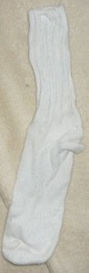
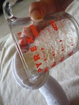
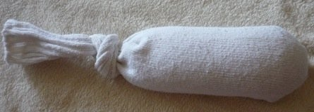

The rice heat pack instructions on this page are specially designed for breastfeeding moms and treatment and prevention of complications related to breastfeeding however these home made heat packs are also great for use as a pregnancy hot pack, for sore joints, necks, or back aches and can also be used as bed warmers. People of all ages can enjoy making and using this simple yet useful design. These heat packs can be made from fabric, towels or when keeping it simple and easy – a sock. The size of the hot pack depends on what it will be used for. MaterialsClean cotton sock. Uncooked rice. It’s best to use white, long grain rice. Do not use instant rice or other quick cooking rice because it may start a fire in the microwave. A piece of yarn, ribbon or string. Please do not use metal materials such as twist ties which can cause sparks when heated in the microwave. How to Make a Rice Heat Pack1. Fill the sock with uncooked rice taking care to not stuff it in compactly, in order to leave room for the grains to move around and easily form to your breast or treated area. You can include aromatherapy in your rice heat pack by adding a few drops of pure essential oil, such as lavender oil reputed to promote relaxation. Dried herbs such as chamomile may also be added to provide a pleasant and relaxing scent. 2. You can sew or merely tie the open end of the sock with string, yarn, or ribbon. It is also possible to tie off the hot pack by making a knot in the end of the sock. Close tightly to prevent a rice spill! Rice Heat PackHeat your sock heat pack for approximately 1 to 2 minutes on high in a microwave oven. While your heat pack is new it will produce moisture when microwaved and may have a smell. The more the heat pack is used the less damp and smelly it will become. Rice Cold PackChill the sock pack in the freezer for about an hour before use or keep a sock pack in your freezer so it is ready whenever you may need it. Shake the rice sock to evenly distribute the heated or chilled rice. Apply the sock pack, hot or cold, to your breast or other area that needs heat or cold treatment. VariationsA small pillow case may be used instead of a sock to make a larger pad. A towel, folded in half and sewn up the sides, easily becomes a larger sized heating pad especially useful for sore muscles and back aches, as pregnancy heat hot or a bed warmer. Alternatives to rice include buckwheat, cherry pits, and corn seed (not popcorn kernels!). Rice doesn't maintain cold very well. For a cold pack , you can use garden gel crystals to fill the pack instead of rice. These hot packs cannot be washed. If you need a washable bag, make a rice heat pack removable and washable cover. Uses With BreastfeedingUse your rice heat pack to prevent and treat blocked milk ducts.Use this heat pack when hand expressing. Use this heat pack when expressing breast milk with a breast pump. Rice Heat Pack SafetyAlways heat a glass of water alongside your rice pack in the microwave to prevent fires. Do not use metal materials in your rice pack or it may cause sparks or fires in your microwave oven. Avoid injury or burns by carefully heating the stuffed sock to a safe temperature. Shake the sock after heating it to evenly distribute the heat and wrap it in a towel before use if it is too hot. Take care not to let the heat pack touch your baby! |